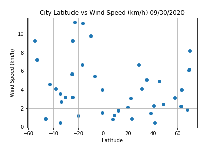
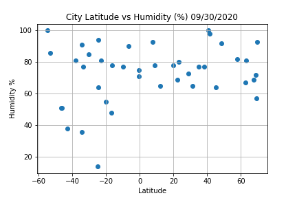
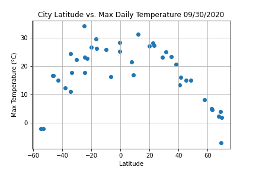

Latitude
Plots
Latitude vs. Temperature
Latitude vs. Humidity
Latitude vs Wind Speed
Latitude vs Cloudiness
Data
Comparison
Latitude vs Wind Speed

There doesn't seem to be a correlation between latitude and wind speed. If anything, the amount of wind seems to increase when you leave the equator. It jumps up significantly in the southern hemisphere.
Visualizations
 